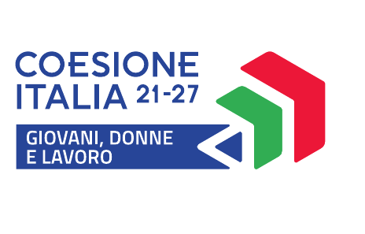
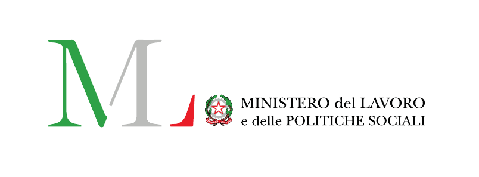
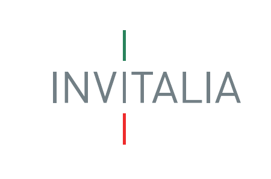
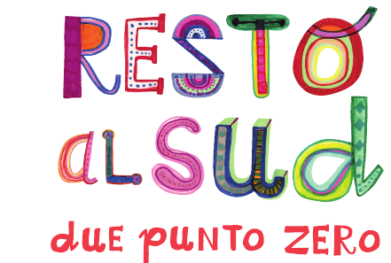

Ogni impresa,
un contesto diverso.
Il lavoro tecnico parte dalla comprensione della produzione, dei processi e dell’organizzazione aziendale.
Avvio e svolgimento di un’attività professionale di consulenza agraria.




Cofinanziato dall’Unione europea
Programma Nazionale Giovani, donne e lavoro
Fondo Sociale Europeo Plus (FSE+) 2021–2027
Finalità
L’operazione sostiene l’avvio e lo svolgimento di un’attività professionale di consulenza in ambito agrario, riconducibile al codice ATECO 74.99.12.
Risultati attesi
Avviare un servizio di supporto tecnico in agronomia e zootecnia, analisi del suolo, irrigazione, fertilizzazione, difesa fitosanitaria e agricoltura di precisione, a beneficio delle aziende agricole e degli operatori della filiera.
- Attività
- Consulenza agraria fornita da agrotecnici · ATECO 74.99.12
- CUP
- C76I25002550001
IL PROSSIMO PASSOOgni progetto comincia
Richiedi una consulenza Ogni progetto comincia
da un confronto.
Raccontami la tua attività e l’obiettivo che vuoi raggiungere.